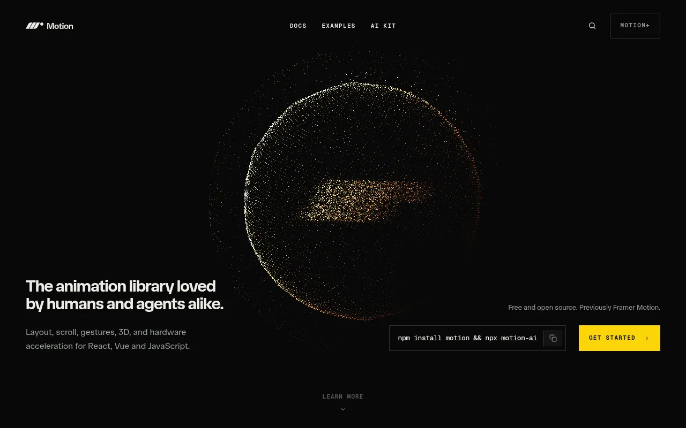
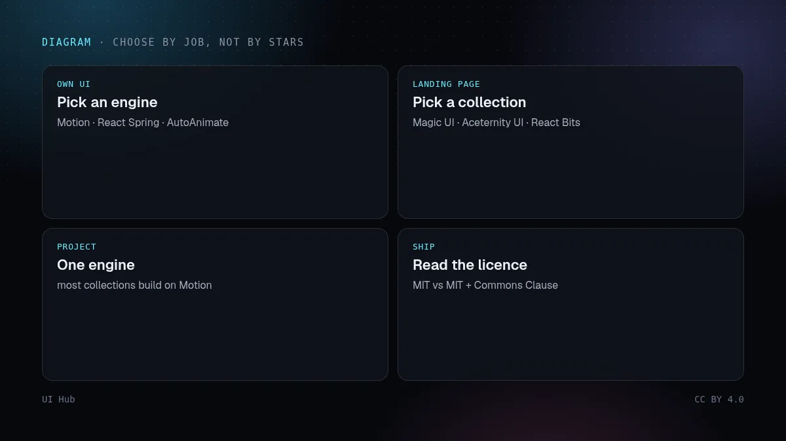

这是一份 2026 年值得了解的 React 动效组件库清单，所有数字都是 2026 年 11 月 1 日直接从 GitHub、npm 和各项目官网读到的。「React 动效组件库」其实包含两类东西：自己编写动画的动画引擎，以及可以直接复制使用的现成动效组件合集。它们解决的问题不同，所以分开列出。星标数和下载量每天都在变，请把它当作一张快照，而不是排名。

Motion 首页：面向 React、JavaScript 和 Vue 的动画库 · 截图：Motion（motion.dev），2026-11-01 截取，版权归原站所有
一句话结论
- 要给自己的组件加动画：Motion（原 Framer Motion）。它是这份清单里下载量最高的动画引擎，MIT 许可。
- 要基于物理的弹簧动画：React Spring。
- 要用几乎不写代码的方式做列表增删动画：AutoAnimate。
- 今天就要一个带动效区块的落地页：Magic UI 或 Aceternity UI，都基于 React、Tailwind CSS 和 Motion。
- 要最大的动效素材库：React Bits，但请先读下面的许可证说明。
- 要放在 shadcn/ui 之上的动效组件：Cult UI、Kokonut UI、Motion Primitives 或 Animate UI。

按任务选择而不是看星标：自己的组件用引擎、落地页用复制即用的合集、一个项目只用一个引擎、上线前核对许可证 · 示意图：UI Hub 原创，CC BY 4.0
动画引擎：由你来写动效
- Motion——「面向 JavaScript、React 和 Vue 的开源动画库」。MIT。GitHub 34,779 星，最近一次推送是 2026 年 11 月 1 日。用
npm install motion 安装，从 motion/react 导入；其 README 明确说明 Framer Motion 现在就是 Motion。motion 包版本 14.9.0，2026 年 10 月 23–29 日这一周 npm 下载约 3394 万次（旧的 framer-motion 包约 6686 万次）。README 列出手势、弹簧、布局过渡、滚动联动和时间线。另有付费版 Motion+；UI Hub 把它标为付费、一次性买断。
- React Spring——「基于弹簧物理的 React 动画库」。MIT。29,261 星。
@react-spring/web 版本 10.1.2，周下载约 719 万次，支持 React 16.8 到 19。
- AutoAnimate（FormKit）——「零配置、即插即用的动画工具」，可用于 React、Vue 或原生 JavaScript。MIT。13,954 星，最近一次推送是 2026 年 7 月 10 日。
@formkit/auto-animate 版本 0.10.0，周下载约 238 万次。它为父元素内进入、离开和移动的元素加动画，所以需要的代码很少。
复制即用的合集：源码归你
- Magic UI——官网写的是「150+ 个免费开源、基于 React、TypeScript、Tailwind CSS 和 Motion 的动效组件与效果」，定位为 shadcn/ui 的搭档。MIT。23,026 星。
- Aceternity UI——官网列出 118+ 个免费组件，另有 183+ 个区块、17 个模板和 4 个完整落地页；区块说明包含在付费的 All-Access Pass 中。基于 React、Tailwind CSS 和 Motion。我们没有找到可以读取星标数的公开代码仓库。
- React Bits——仓库自述为「最大的开源动效、交互、可定制 React 与 Next.js 组件库」。50,984 星，是这份清单里最多的。可以选择 JavaScript 或 TypeScript、纯 CSS 或 Tailwind，然后复制源码或用它的 CLI 安装。许可证：MIT + Commons Clause（见下文）。
- Cult UI——「150+ 个免费 shadcn/ui 组件，基于 Tailwind CSS 和 Motion，MIT 许可」。6,899 星，最近一次推送是 2026 年 10 月 29 日。
- Kokonut UI——基于 Tailwind CSS、shadcn/ui 和 Motion 的开源组件合集。MIT。2,259 星。
- Motion Primitives——一套动效界面组件包。MIT。6,879 星，最近一次推送是 2026 年 9 月 28 日。
- Animate UI——「完全动效化、基于 React、TypeScript、Tailwind CSS、Motion 和 Shadcn CLI 的开源组件分发」。4,819 星。许可证：MIT + Commons Clause。官网还提供一个 agent skill，用
npx skills add imskyleen/animate-ui 安装。
只把一件事做好的小库
- Sonner（通知）和 Vaul（移动端风格抽屉），都出自 Emil Kowalski，同一周 npm 周下载分别约 5445 万和 3119 万次。
- Lenis（平滑滚动）周下载约 238 万次，GSAP 约 826 万次。GSAP 并非只面向 React；UI Hub 注明它免费使用，但采用自有许可证而不是 MIT。
上线前先读许可证
上面有两个库使用「MIT + Commons Clause」。React Bits 的许可证写明：可以使用该软件，包括商业用途，前提是不出售、转授权或再分发组件本身，无论单独、打包还是移植版本。用它做自己的产品或网站没有问题；把这些组件当作你自己的模板包发布则不行。Animate UI 的许可证名称相同，重用前请读它的 LICENSE 文件了解确切条款。Motion、React Spring、AutoAnimate、Magic UI、Cult UI、Kokonut UI 和 Motion Primitives 在 GitHub 上显示为普通 MIT；Aceternity UI 的免费组件和付费区块遵循官网上的自有条款；小型库的许可证我们没有逐一核对。
怎么选
- 从任务出发，不要看星标。给自己组件里的状态变化加动画，选引擎（Motion、React Spring、AutoAnimate）；做营销页，选复制即用的合集。
- 只选一个引擎。这里大多数合集都基于 Motion，所以自己的代码也用 Motion，依赖就只有一个而不是两个。
- 只复制用到的。合集是以源码文件的形式安装的，归你所有，所以要删掉不用的组件，并检查每个组件的依赖。
- 每页只放一个主视觉特效。堆叠动效背景对可读性和性能的伤害大于帮助。
- 尊重减少动态效果设置。在系统开启「减少动态效果」的情况下测试，同时测浅色和深色主题、375 px 宽度和键盘操作。
# UI Hub 里视觉风格为 "motion" 的免费 React 库
curl -s https://ui.incidental.site/api/resources.json \
| jq '.items[] | select(.type=="library" and .pricing=="free"
and (.tags|index("React")) and ((.vs//[])|index("motion"))) | {name,url}'
Magic UI 首页：150+ 个免费开源动效组件 · 截图：Magic UI（magicui.design），2026-11-01 截取，版权归原站所有UI Hub 能帮什么
UI Hub 收录了 235 个组件库；2026 年 11 月 1 日，其中 11 个带有 React 标签且视觉风格为 motion，这 11 个里 9 个标为免费。上面的筛选命令可以用公开 API 复现这份名单。想读得更深，可以看我们的让动效有手感（时长、缓动和减少动态效果），以及 Magic UI、Aceternity UI 和 Cult UI 的深度解读。